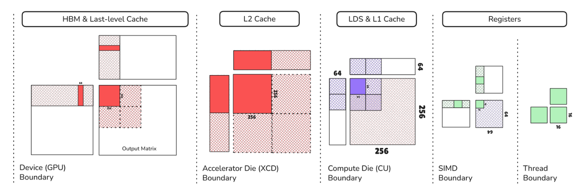
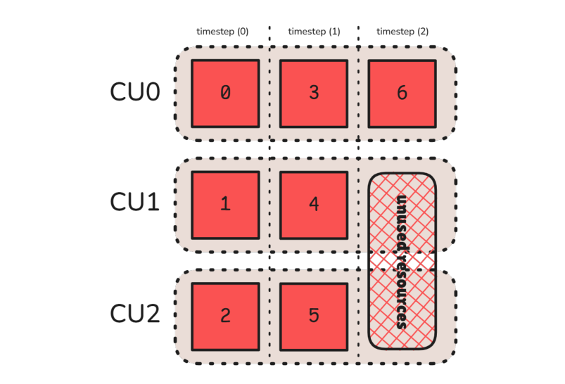
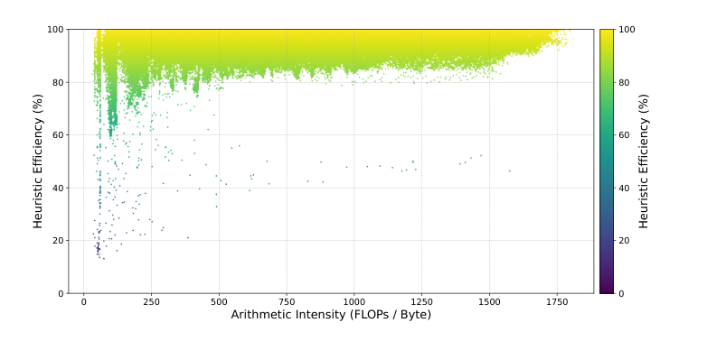
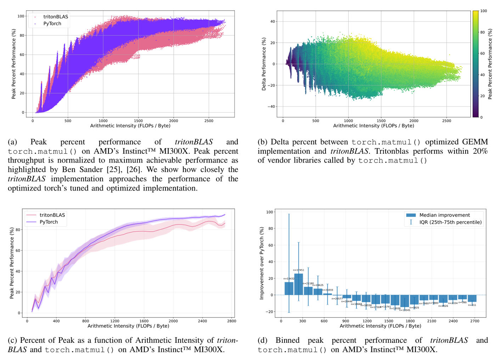
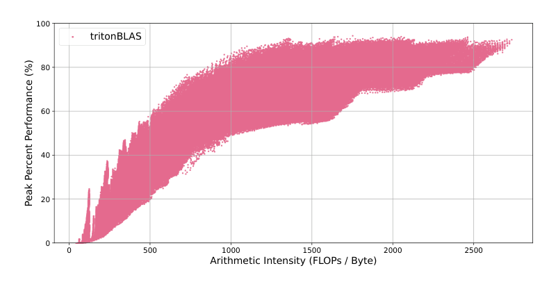
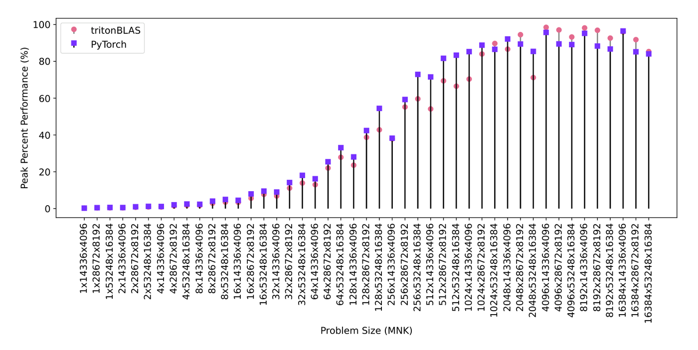

GEMM是所有AI与HPC负载的性能发动机，但写快kernel只是第一步：库还得在运行时为每个问题规模挑选正确配置，而Triton等框架目前依赖自动调优：编译与基准测试成本高，且调好的配置很难跨硬件代际移植。
AMD的这篇论文提出tritonBLAS：用一个解析性能模型彻底替代自动调优。它显式建模GPU架构、矩阵形状与分块行为之间的关系，在15万个形状上达到穷举自动调优94.7% 的性能，而选择时间只有几十微秒、与问题规模无关。
通用矩阵乘法（GEMM）一直是AI、机器学习与HPC负载的性能发动机：像GPT-4这样的LLM依赖的Transformer网络，每轮前向就要执行成千上万甚至上百万次GEMM运算。GPU借助专用矩阵核在GEMM加速上占据主导，但尽管这个算法看上去简单，为GPU写高效的GEMM kernel与库依然困难：需要精细地捕捉GPU的计算与内存层级、编排寄存器/共享内存/缓存之间的数据移动，并确保矩阵核始终有数据可吃而不停顿。
而写出快kernel只是问题的一半。要构建一个完整的库，除了有一批优化过的kernel，还必须能在运行时为用户的问题选择或即时编译（JIT）正确的kernel配置，包括tile尺寸、展开深度、循环调度策略，以及提高L2命中率的数据重排。也就是说，库的效果既取决于单个kernel的原始效率，也取决于kernel的选择与编排。
Triton让写高性能GPU kernel容易了许多，它简化了线程同步、向量化、内存合并等复杂度，同时仍暴露必要的调优控制。但Triton及类似框架仍然依赖自动调优来选择kernel参数：这些基于搜索的技术需要大量编译与基准测试，消耗大量时间与资源，而且调好的配置很难跨硬件代际移植。
这篇论文提出tritonBLAS：一个建立在Triton之上、彻底去掉自动调优依赖的GEMM库。它不用经验搜索，而是使用一个解析性能模型来刻画GPU架构与算法分块选择之间的相互作用，从而确定性地预测近最优配置、通过JIT编译生成专用kernel，完全不需要运行调优阶段。三项贡献分别是：确定性、零自动调优的Triton GEMM选择器；只依赖可测量硬件参数（带宽、指令延迟、矩阵核形状）的架构可移植性，换新GPU只需做基于微基准的轻量校准；以及在15万个GEMM形状与真实LLM负载上的评估：达到穷举自动调优性能的94.7%，消除了调优开销，并在内存受限场景中匹配或超过厂商库。
tritonBLAS在Triton里实现了一个kernel，用参数化的层次化分块配置来利用各个内存与计算层级，因此只需改动kernel配置就能置换不同的分块层级。选择配置的方式，是估计某个硬件架构下每一种可能的分块层级所对应的GEMM计算延迟；而要量化系统总延迟，就必须同时考虑并行计算资源与数据搬运资源的利用率。
模型捕捉分块结构对并行度与局部性的影响。tile从计算的最小「原子」一直排到存在主存中的整个系统级问题，共分五级：指令级tile（每个SIMD中矩阵指令消费的尺寸）、warp/波前（寄存器）级tile（一个SIMD随时间处理的一组指令tile）、workgroup/线程块（共享内存）级tile（SIMD之间由软件管理的共享内存）、缓存tile（软件管理的共享内存之上，有一到多级硬件管理的缓存，其范围内包含若干共享内存tile）、以及全局问题（在空间即计算单元、与时间上的整体展开）。
从层级底部往上，覆盖了整个问题以及它如何映射到逐级变大的子tile。这些层级存在的意义是最大化数据局部性与复用，从而带来更高的总带宽，让现代GPU能够喂饱越来越饥渴的计算单元。对MI300X而言，这套层级与硬件/编程模型中的逻辑与物理范式对应关系如下表。
由此得到的Triton kernel可以按层级参数化配置，tritonBLAS则通过估算每种分块层级在特定硬件上的GEMM延迟来做选择。上图为MI300X上输出矩阵的层次化分块示例，展示了设备、XCD、CU、SIMD与线程级的分解。

| 层级 | 内存tiling范围 | 计算范围 | 物理范围 | 逻辑范围 |
|---|---|---|---|---|
| 指令级 | 矩阵核 | 矩阵核 | 指令 | ： |
| 寄存器级 | 寄存器 | SIMD | SIMD | Wave |
| 共享内存级 | 共享内存 | 计算单元 | 计算单元 | Workgroup |
| 缓存级 | L2 | CU组 | XCD | ： |
| 全局级 | LLC | 全部CU | 设备 | ： |
现代加速器靠并行度获得性能，而并行发生在层级的多个级别上。模型考虑三级并行：矩阵/张量核级并行、计算单元内部的并行、以及跨计算单元的并行，并用明确的确定性表达式量化各自的性能影响，不需要启发式调参。
最低层的tile处理延迟由有多少操作被并行到矩阵/张量核上决定；多数情况下程序员对这部分几乎没有控制权，它由GPU架构师以矩阵指令的延迟形式定义。因此可以把该延迟视为常数，从而得到一段固定时间内矩阵指令的一致吞吐，并用它来参数化其它计算。往上到寄存器/波前级，其延迟等于寄存器tile的暴露延迟乘以一个SIMD随时间处理的寄存器tile数量。最后一级是计算单元的利用率，也就是占用率：典型的GPU GEMM实现采用输出固定的数据流，把M、N维度映射到计算单元上、K维度随时间顺序处理，占用率因此由workgroup tile的形状与输入问题在M、N上的形状共同决定。
这里有一个关键观察：只有当输出tile数量超过计算单元数量时，计算才会被暴露到多个时间步上，而最后一个时间步是唯一「未占满」的时间步（也就是尾部占用率或wave quantization问题）。因此可以假设除最后一步外都满占用，从而完整刻画整个问题的占用率。

tritonBLAS把数据局部性分成两类：软件管理与硬件管理。前者如共享内存，数据搬移由程序员显式指定；后者依赖硬件透明地管理数据放置与搬移，例如缓存。以workgroup tile为例，M×K的tile会被复用N次、N×K的tile会被复用M次，因为共享内存是显式管理的，程序员可以精确控制SIMD内部的数据复用与SIMD之间的数据共享。
更隐式的缓存tile尺寸，可以用「有多少workgroup tile能访问该缓存」来推算：例如16个计算单元各自处理一个workgroup tile，缓存tile的面积就是16，其可能的排布就是16的因子分解。tritonBLAS还会去预测「在缓存中共享的tile」的形状，以最大化已占用计算单元之间的数据复用；多数情况下，由共享该缓存的若干计算单元拼出的最大正方形能带来最好的复用，因此在需要默认值时，常取「共享该缓存的CU数量的平方根向下取整」作为因子分解。
模型从第一性原理出发估计总计算延迟，并据此在冲突目标之间导航。它把常见的瓶颈归为粗粒度几类，并给出对应的解法方向：加载/存储发射率受限（占用足够的加载/存储单元不足，需提高其占用率）；软件管理内存带宽受限（对共享内存的复用已经很充分，但受限于从它加载的速度，需增大寄存器tile以最大化复用）；缓存带宽受限（硬件管理的缓存带宽成为约束，需提高软件管理内存中的数据复用）；算力受限但占用不足（已占用的计算单元里矩阵指令利用率很高，但占用的计算单元不够，需展开K循环或调整tile尺寸提高占用）；以及最大并行算力受限（所有计算单元都被占用、且因为软件流水线不再是内存受限而达到很高的矩阵指令利用率，此时达到最大性能）。
需要强调的是，这些目标本身往往互相冲突：提高加载/存储发射率通常需要更强的跨核并行，这又要求更小的tile；而更小的tile会降低缓存层级中的数据复用，因为复用与tile尺寸紧密相关。解析模型正是通过估计总延迟来在这些取舍之间导航。
最后，所有参数被聚合成一个最终的「延迟」，作为某个分块方案质量的量化指标。需要考虑流水线同时受内存加载与计算指令延迟中较大者的限制，还要考虑额外的流水线气泡：开头「只有加载没有计算」的气泡称为prologue，结尾「只写不计算」的称为epilogue。prologue的规模与软件流水线的加载阶段相同，但store阶段只随输出tile的尺寸伸缩，而不是随输入tile尺寸。与K方向上每一次迭代都会产生的流水线延迟不同，prologue与epilogue每个输出tile只发生一次。
由于计算可能被暴露到多个时间步（当输出tile数量超过计算单元数量时），每个时间步的延迟等于单个输出tile的延迟，再乘以时间步数，就得到整个GEMM运算的总延迟。
实验在AMD Instinct MI300X上进行，使用Triton 3.4.0与rocm/pytorch:rocm6.4.1容器，数据类型为FP16，两个矩阵在内存中都按K连续。评估分四个角度：与Triton穷举自动调优的准确度、选择开销、与厂商库（PyTorch）的整体对比，以及在Llama3关键矩阵尺寸上的表现。
作者用15万个随机问题规模做对比，这些规模都是128的倍数且小于8193，并对每一组tile参数做穷举测量。这里的「选择效率」定义为：相对穷举搜索中所能达到的最优性能，tritonBLAS达到的性能百分比。结果是94.7% 的选择效率：在没有自动调优开销的前提下，拿到了接近穷举方案的最优性能。
下图把每个问题形状上的效率画了出来：横轴是问题的算术强度（FLOPs/字节），纵轴是效率（1.0表示预测到了最好的kernel）。大多数数据点密集聚在图的顶部，说明在很宽的算术强度范围内都有很高的启发式效率，而在较低强度（受延迟限制的问题）处变化更大。

tritonBLAS的解选择比传统调优式流程快得多，原因在于它只对问题与tile维度做非迭代的数学计算，循环次数只与参数数量相关；而基于穷举搜索的方法要针对每个问题规模把每个参数组合都跑一遍kernel，选择开销大得多。换言之，tritonBLAS的开销随参数数量纯线性增长，穷举搜索则额外乘上一个与M、N、K相关的因子；对于批处理或分组GEMM，后者的复杂度还会进一步扩大到与批次数相关。
下表展示了这个差距：在75个候选配置下，自动调优要花10秒以上，而启发式选择把时间降到微秒量级，相差五到六个数量级。tritonBLAS做一次解析式tile选择只要50到80微秒，且与GEMM尺寸无关。
这意味着tritonBLAS通常比自动调优快五个数量级以上地选出近最优kernel，因此更适合动态负载、大搜索空间，或者调优成本会主导运行时间的环境。
| 问题规模 (M×N×K) | Triton自动调优 (s) | tritonBLAS (s) |
|---|---|---|
| 512 × 512 × 512 | 11.965 | 0.000070 |
| 1024 × 1024 × 1024 | 11.928 | 0.000057 |
| 2048 × 2048 × 2048 | 12.303 | 0.000073 |
| 4096 × 4096 × 4096 | 13.537 | 0.000055 |
| 8192 × 8192 × 8192 | 48.087 | 0.000075 |
| 16384 × 16384 × 16384 | 1383.594 | 0.000054 |
PyTorch的矩阵乘法提供了访问厂商库的Python接口，在MI300X上这些库是经过自动调优以达到硬件峰值性能的。对比显示：tritonBLAS使用Stream-K等技术来管理wave quantization，从而在各种GEMM形状与尺寸上取得更好的占用率；平均而言tritonBLAS比torch.matmul快约3%，在内存受限的场景中尤其占优。

模型只依赖少量经过校准的硬件参数：缓存与内存带宽、访问延迟，以及MFMA/张量核指令的形状；只要更新这些数值，就足以把模型迁移到新的GPU。实验显示，把同一套模型套到AMD Instinct MI350X上（仅修改这些参数），得到与MI300X一致的趋势，说明跨架构迁移是直接的，不需要额外的调优或模型改动。

这一组规模取自Llama 3模型负载，因此能代表真实的推理需求。结果显示tritonBLAS与torch.matmul的峰值性能非常接近：观察到的最大加速为1.10倍，并在10个案例中超过PyTorch；虽然平均慢13.9%，但整体性能与这款硬件上最好的可用kernel相比仍极具竞争力。

tritonBLAS提出了一个确定性的解析框架来做GEMM kernel参数选择，从而消除运行时自动调优：通过建模GPU架构、分块层级、并行度与数据局部性之间的相互作用，它取得了94.7% 的穷举搜索效率，同时把配置开销大幅压下去。模型与架构无关的设计和可复现性，使其适合多样的工作负载与硬件平台，评测也展示了它的可扩展性、低延迟，以及与厂商优化库相竞争甚至更好的吞吐。这项工作为未来扩展到多GPU环境与更广的算法类别打下基础，为高性能计算与机器学习应用提供了一个实用、高效的替代经验调优的方案。
参考：https://arxiv.org/pdf/2512.04226